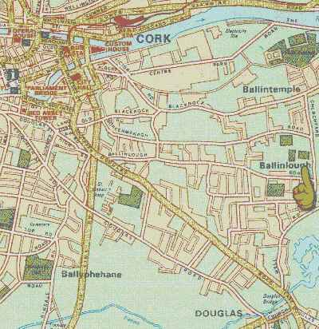

Map and Description of Grounds
Cork Constitution's grounds are located in Ballintemple. Con moved from the Maradyke to Temple Hill in 1953.
The grounds have expanded since to 12 acres. There are three playing pitches, terracing and a stand which holds 300
people.
The players facilities include 7 dressing rooms, showers and gym. For socialising there is the main
bar, dance hall and presidents room. On February 1st 2002 Constitution took a major step forward with the switching on of the new floodlights in Temple Hill. Let us hope that Friday nights at Temple Hill can become a major part of
rugby life in Cork.
Follow this map to see how to get to Temple Hill.
